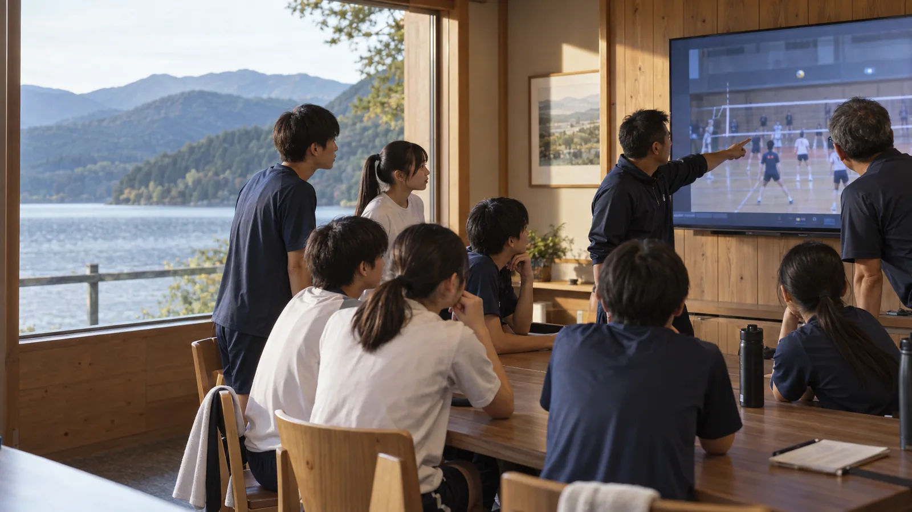
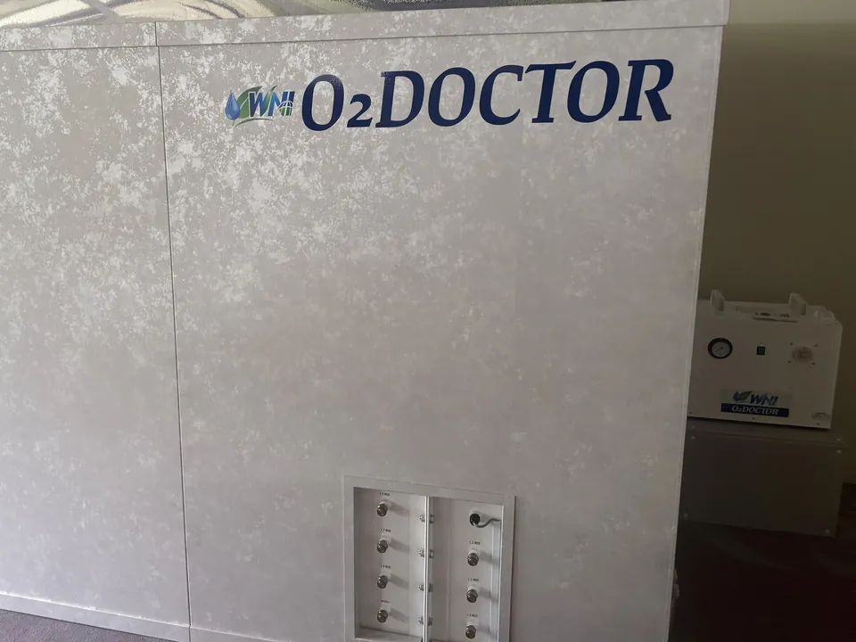

白樺湖畔
部屋割り、食事、洗濯、入浴まで館内で。練習後は酸素カプセル「WNI O2 DOCTOR」で休息の時間を、夜はMAXHUB 55型で練習映像をチーム全員で振り返り。10泊程度の長期合宿もご相談ください。

グループ向け和室20畳は6〜10名。引率者・コーチは和洋室やツインを相談できます。
20名以上は大広間で夕食・朝食。11名以上は2食付プラン。早朝朝食・弁当・アレルギーは要相談。
有料コインランドリー（台数限定）。洗剤はフロントで販売しています。
お部屋型の酸素カプセル「WNI O2 DOCTOR」を館内に導入（利用条件は要問合せ）。
MAXHUB 55型で練習映像やフォームを全員で確認できます。
大型バス5台・乗用車40台の無料駐車場。バスは事前にご相談ください。

一般に「酸素カプセル」と呼ばれる設備です。寝そべって入る筒形ではなく、扉から歩いて入るお部屋型（キャビン）。外より少し気圧を高めた室内で、練習の合間や夜の休息時間を過ごせます。
効果を保証するものではありません。料金・利用時間・対象年齢・健康上の注意事項は、事前に山幸閣へお問い合わせください。
※ホテルの設備ではありません。ご予約・利用条件は各施設へお問い合わせください。
時刻・内容は一例です。早朝練習時の朝食時間は事前にご相談ください。
有料コインランドリー（台数限定・洗剤はフロントで販売）と電子レンジ（本館2・3階）を館内に設置しています。連泊時の献立、客室清掃・シーツ交換の頻度、会場の連日確保などは、日程・人数に合わせてご案内します。
人数・日程・ご希望をお知らせください。日程や人数が未定でもかまいません。
電話受付 9:00〜21:00 ／ FAX 0266-68-2092